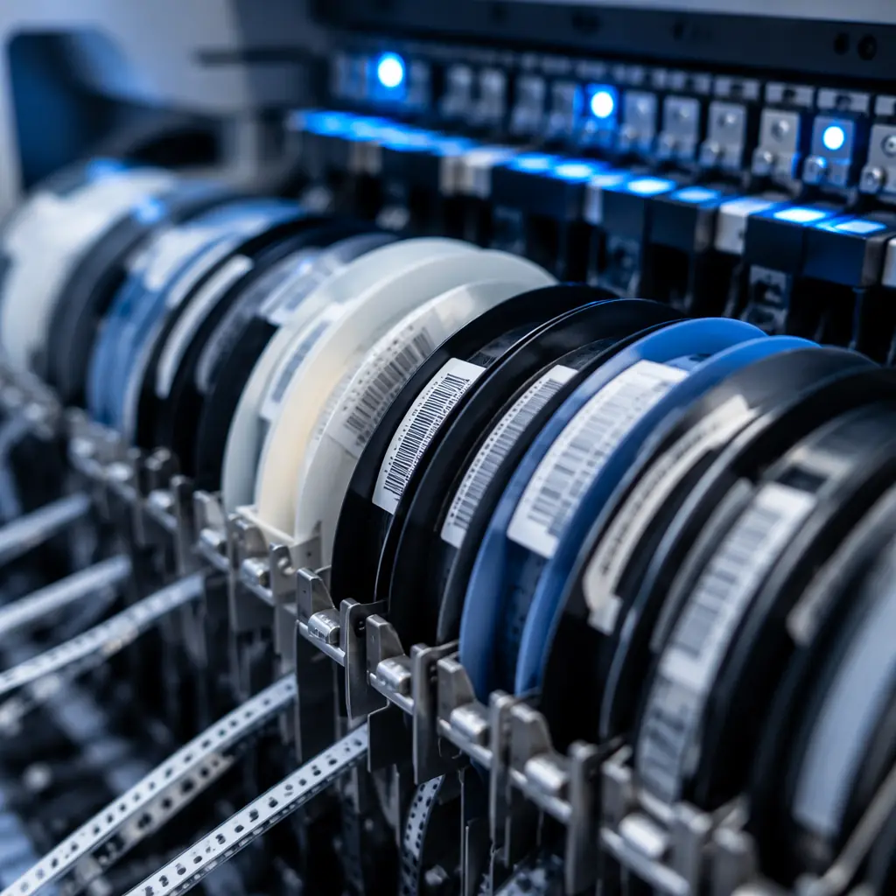
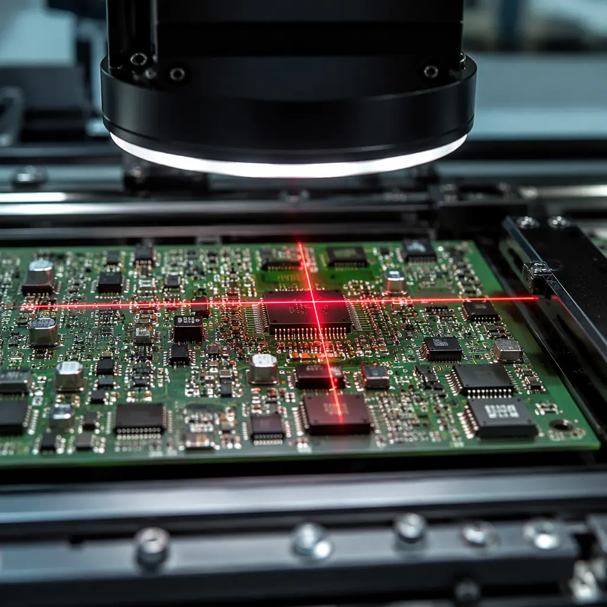

Every PCB buyer faces this decision early in the sourcing process: should you purchase components yourself and ship them to the assembler (consignment), or let the factory handle everything — components, assembly, and testing — under one roof (turnkey)? The answer can swing your per-unit cost by 15–40% and affect lead time by weeks.
At Huaxing PCBA, we run both models across 8 SMT lines with a combined capacity of 8 million placements per day. We see the trade-offs daily. This guide breaks down the real cost structures, quality implications, and situational logic that determines which model fits your project.

What Is Consignment PCB Assembly?
In the consignment model, you — the buyer — purchase all components directly from distributors (Digi-Key, Mouser, Arrow) or authorized channels and ship them to the assembly factory. The factory provides only the bare PCB fabrication and assembly labor. You retain full ownership of the bill of materials (BOM) pipeline.
Key Insight: Consignment gives you maximum control over component authenticity and cost, but shifts inventory risk, logistics coordination, and component shortage management onto your team. It's the preferred model for defense contractors, medical device OEMs, and companies with established supply chains.
Pros of Consignment Assembly
Component Authenticity Guarantee
You buy from authorized distributors with full traceability. No risk of counterfeit ICs or substandard passives. Our counterfeit detection guide covers why this matters for high-reliability applications.
Lower Assembly Labor Cost
Since you provide all components, the factory quote covers only fabrication + assembly labor. Expect 20–35% lower invoice amounts compared to turnkey — but you shoulder component procurement costs separately.
Full BOM Visibility and Control
You see every line item cost. If a specific MCU is $4.20 from Mouser, that's exactly what you pay — no factory markup. This transparency is essential for cost-sensitive high-volume products. See our quote comparison guide for how to verify factory pricing.
What Is Turnkey PCB Assembly?
In the turnkey model, you send Gerber files, a BOM, and assembly drawings — and the factory delivers finished, tested PCBAs. The assembler sources all components, manages inventory, handles shortages, and takes responsibility for the entire production pipeline. Our turnkey assembly guide covers the full process flow.
Pros of Turnkey Assembly
Single Point of Accountability
One partner, one invoice, one set of quality reports. If anything goes wrong — a component shortage, a solder defect, a delayed shipment — you have one throat to choke. This simplifies vendor management dramatically for companies without dedicated procurement teams.
Factory Component Pricing Power
Chinese PCB assemblers buy components in massive volumes. A capacitor you pay $0.12 for on Mouser may cost the factory $0.03 through their supply network. For BOMs with 200+ line items, aggregate component savings can offset the assembly markup entirely. Learn how pricing works in our PCB price negotiation guide.
Shortage Management Built In
During the 2021–2023 chip shortage, factories with deep supplier networks found components that individual buyers couldn't. A turnkey partner carries this burden — they track EOL notices, find alternates, and handle last-time buys. Read about managing component lifecycles in our obsolescence management guide.

Cost Breakdown: Consignment vs Turnkey — A Real-World Comparison
Let's ground this in numbers. Below is a comparison for a mid-complexity industrial control board: 200 components, 500-unit run, 4-layer PCB, assembled in Shenzhen.
| Cost Category | Consignment Model | Turnkey Model | Delta |
|---|---|---|---|
| PCB Fabrication (4-layer, 500 pcs) | $1,250 | $1,250 | $0 |
| Component Procurement | $8,400 (buyer sourced) | $7,200 (factory sourced) | –$1,200 |
| Assembly Labor + Stencil | $1,800 | $2,600 | +$800 |
| Testing (AOI + ICT + functional) | $900 | $900 | $0 |
| Logistics (buyer → factory) | $450 (component shipping) | $0 | –$450 |
| Project Management Overhead | $350 (buyer time) | $0 | –$350 |
| Total Landed Cost | $13,150 | $11,950 | –$1,200 |
| Per-Unit Cost | $26.30 | $23.90 | –9.1% |
In this scenario, turnkey saves $2.40 per board — the factory's component purchasing advantage outweighs the assembly markup. But the gap narrows significantly when BOMs are short (under 50 line items) or when the buyer has their own distributor volume pricing. For more on cost drivers, check our PCB cost factors guide.
Quality Control: Which Model Produces Better Boards?
This is the question that keeps engineering managers up at night. The honest answer: both models can produce IPC Class 3 quality — but the risk profiles differ.
Component Authenticity Risk (Higher in Turnkey)
In turnkey, the factory sources components. A reputable factory with ISO 9001 and IATF 16949 runs an approved vendor list (AVL) and incoming inspection — but many smaller shops don't. Always verify the assembler's component sourcing process during your supplier audit. Request lot traceability reports for all semiconductors.
Moisture Sensitivity Handling (Higher in Consignment)
When you ship components yourself, MSL-rated parts must survive transit with proper packaging. One broken moisture barrier bag = entire reel at risk of popcorning during reflow. Our MSL handling guide covers packaging requirements for cross-border component shipping.
Process Quality (Equal When Audited)
Assembly quality — solder joint formation, AOI pass rates, ICT yield — depends on the factory's process control, not the sourcing model. Both models use the same SMT lines, same reflow profiles, and same testing methods. The differentiator is component quality, not assembly quality.
When to Choose Consignment Assembly
Consignment wins in these scenarios:
| Scenario | Why Consignment |
|---|---|
| Military / defense contracts | ITAR and DFARS require full component traceability to authorized distribution — factory sourcing can't guarantee this chain of custody. |
| Medical Class III devices | FDA validation depends on locked BOMs with approved manufacturer lists (AML). Changing a capacitor vendor triggers re-validation — so you buy the exact parts yourself. |
| Proprietary ASICs or custom silicon | You own the only source — there's nothing for the factory to procure. These chips ship directly from your vault. |
| Existing distributor relationships | If you already have 15% net-60 pricing with Arrow for your annual volumes, the factory's spot-market pricing likely can't beat it. |
| Prototype and NPI runs | Low volume, frequent BOM changes, short lead times — consignment keeps you agile. For low-volume assembly specifics, see our low-volume PCB assembly guide. |
When to Choose Turnkey Assembly
You're a Startup Without a Supply Chain Team
Managing 150 component SKUs across 12 distributors, tracking lead times, and handling shortages is a full-time job. Turnkey converts this overhead into a single line item on the assembly invoice.
Your BOM Has 100+ Line Items
Component procurement complexity scales non-linearly with BOM size. At 100+ line items, the factory's purchasing infrastructure — ERP-integrated BOM scrubbing, alternate part databases, consolidated shipping — saves real money and weeks of lead time.
You Need Consolidated Logistics
Instead of coordinating component shipments from 5 suppliers to your office, then from your office to the factory — the factory handles everything. One shipment leaves Shenzhen: finished PCBAs. Our Incoterms and shipping guide covers the logistics options.
Hybrid Model: The Practical Middle Ground
Many mature programs run a hybrid: you supply the long-lead, high-value, or proprietary components (MCUs, FPGAs, custom ASICs), and the factory sources passives, connectors, and commodity ICs. This captures the best of both worlds — component authenticity on critical parts, factory volume pricing on everything else.
The hybrid model requires clear BOM documentation: mark each line item as "customer-supplied" or "factory-sourced" with agreed-upon alternate part numbers for the factory-sourced items. Your PCB assembly process guide covers BOM preparation in detail.
Summary: Making the Right Choice
There is no universal winner between consignment and turnkey — the right answer depends on your BOM complexity, industry regulations, supply chain maturity, and volume. For most commercial and industrial programs, turnkey delivers the best balance of cost and convenience. For regulated industries and proprietary designs, consignment provides the control you can't delegate.
At Huaxing PCBA, we operate both models at scale. Our IATF 16949 and ISO 9001 certified facility runs consignment and turnkey side by side on the same SMT lines — so you're not forced into one model by factory limitations. We also support hybrid programs with clear BOM segmentation. Learn how to audit a PCB supplier or contact our engineering team to discuss which model fits your next project.